FAQ on How Installation of EViews7 in Windows
The procedure below explains how to install EViews7 in windows system
1.Click to the Autorun file to install EViews7.
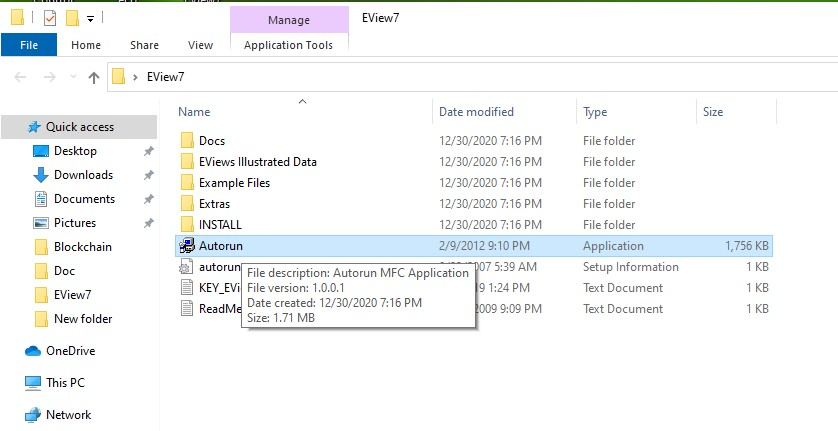
2. Select 'Install EViews' button.
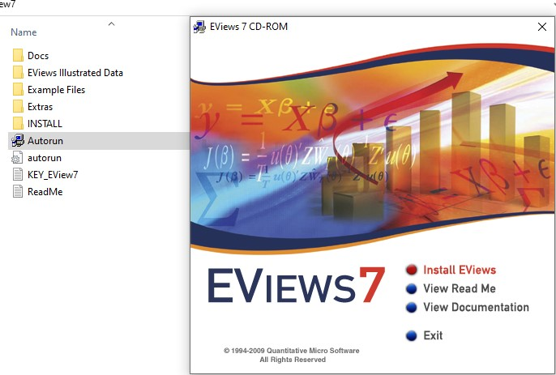
3.Now Install Shield Wizard Starts.
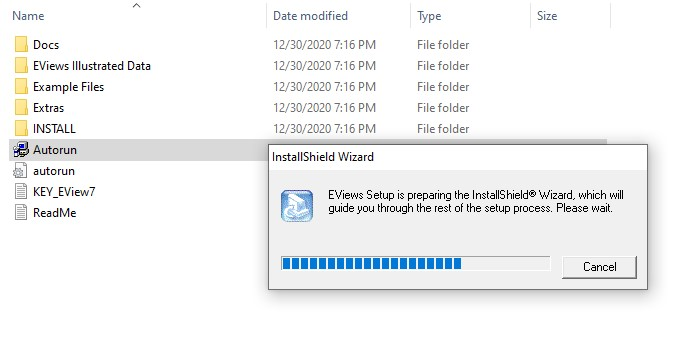
4. Now welcome to the EViews installer to install EViews click on 'Next'.
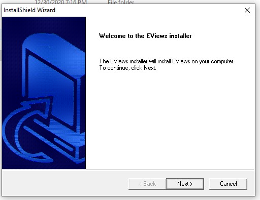
5. Now in License Agreement select 'Yes'.
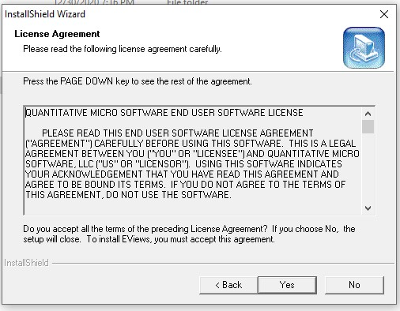
6. Now we Choose Destination Location (folder) then click on Next.
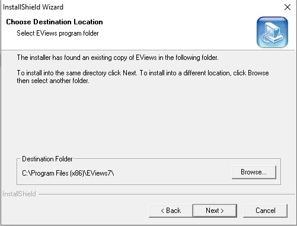
7. Now in Customer Information enter 'Serial Number' from KEY_EView7 (From Figure-1 and From Figure-2)
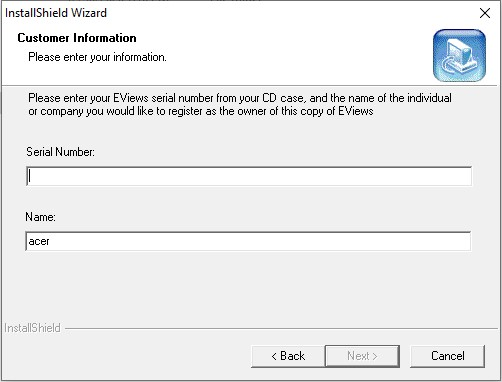
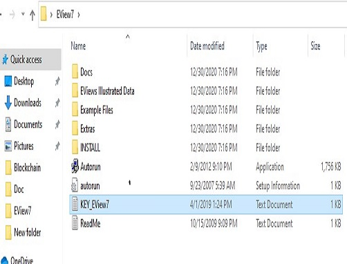
Figure-1
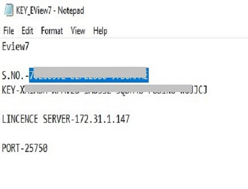
Figure-2
8. On entering 'Serial Number' From Figure-2 and type 'Name' click on 'Next'
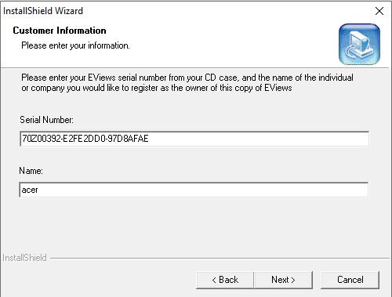
As we show upper page copy 'Key' From Figure-2 and Pate here and then click on 'Next'.
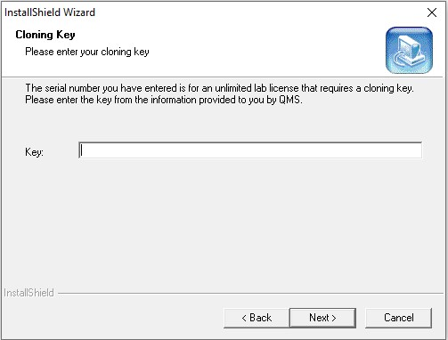
10. After entering 'Key' From Figure-2 then Click 'Next'.
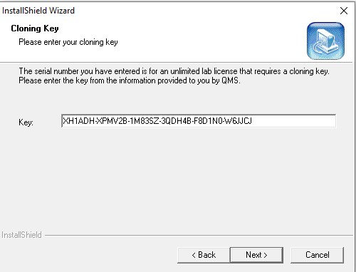
11. At License Management enter the host computer "License Server" and enter the Port No.
From Figure-2 then Click on Next.
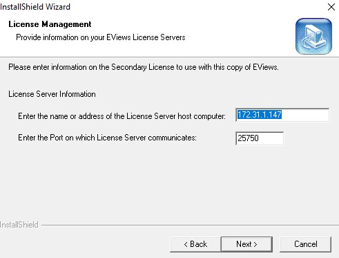
12. Choose the components Setup will install then click on 'Next'.
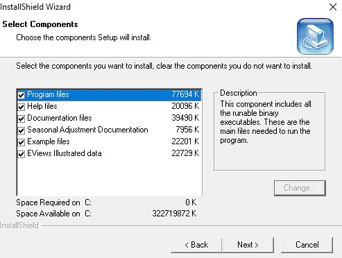
13.Select Program Folder and then Click On 'Next'.
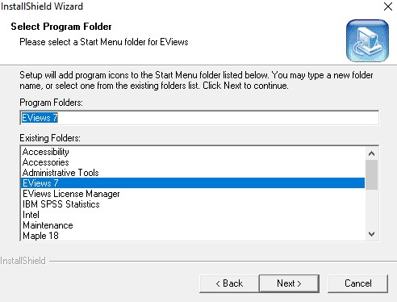
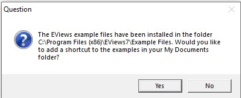
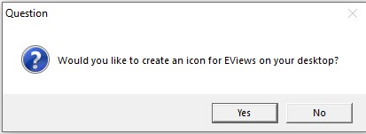
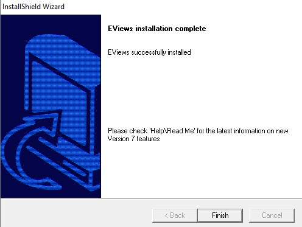